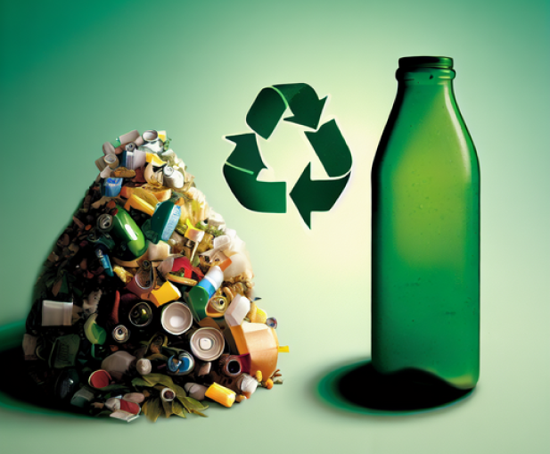
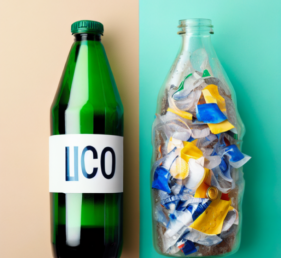

Reciclável vs Lixo Comum: Qual a Diferença?
Em nossas casas, é comum gerarmos resíduos todos os dias. Alguns desses resíduos podem ser reciclados, enquanto outros não. Saber a diferença entre o que é reciclável e o que é lixo comum é importante para garantir que façamos a separação correta e contribuamos para a preservação do meio ambiente
O que é reciclável?
Materiais recicláveis são aqueles que podem ser transformados em novos produtos após passarem por um processo de reciclagem. Esses materiais incluem, por exemplo, papel, plástico, metal e vidro.
O papel, por exemplo, é um material reciclável e pode ser transformado em novos produtos de papel, como papel higiênico, guardanapos e papel para embalagens. O plástico também é reciclável e pode ser transformado em novos produtos plásticos, como garrafas, sacolas e potes.

O que é lixo comum?
Já o lixo comum é todo o resíduo que não pode ser reciclado e que precisa ser descartado de forma adequada. Esse tipo de lixo inclui, por exemplo, restos de alimentos, fraldas, papéis sujos, materiais contaminados, entre outros.
O lixo comum pode ser destinado para aterros sanitários, que são locais preparados para receber esses resíduos de forma controlada e segura, evitando a contaminação do solo e dos recursos naturais. É importante lembrar que o descarte inadequado do lixo comum pode gerar diversos problemas ambientais, como poluição do solo e das águas, contaminação do ar e proliferação de doenças.

Qual a importância da separação correta?
A separação correta entre materiais recicláveis e lixo comum é fundamental para garantir a eficiência do processo de reciclagem. Quando o lixo é descartado de forma incorreta, como misturando materiais recicláveis com lixo comum, isso pode dificultar ou até mesmo inviabilizar o processo de reciclagem, gerando mais desperdício e poluição.
Ao separar corretamente os resíduos em casa, contribuímos para a redução do volume de lixo enviado para os aterros sanitários, preservando os recursos naturais e ajudando a prolongar a vida útil desses locais.
Em resumo, é importante entender a diferença entre materiais recicláveis e lixo comum para que possamos realizar a separação correta dos resíduos. Dessa forma, estaremos contribuindo para um meio ambiente mais saudável e sustentável. Lembre-se sempre de consultar as orientações de coleta seletiva da sua cidade e de educar as pessoas ao seu redor sobre a importância da separação correta dos resíduos.